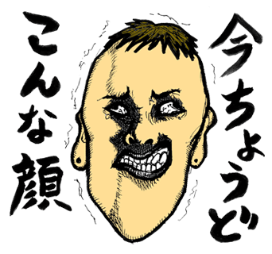
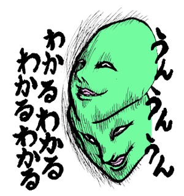
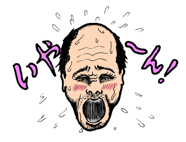
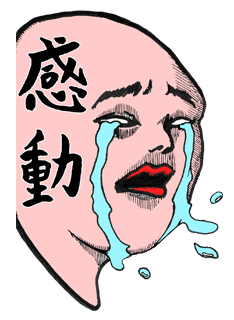
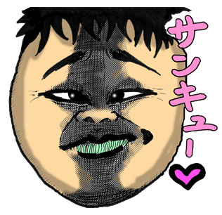

爆裂！イラッとギャグスタンプ
ウザくてイラっとするオヤジや可愛くない犬など、バラエティ豊かなおもしろおかしいギャグスタンプが盛り沢山！あいさつから挑発まで完全網羅の決定版！
LINE STOREへ爆裂！イラッとギャグスタンプ
キャラクター紹介
個性豊かな「爆裂！イラッとギャグスタンプスタンプ」のキャラクターを一挙大公開いたします！
※ スタンプを押すと当たりが潜んでるかも！？


たけし
「お願い」のバーゲンセール。こういう奴に限って人のお願いは聞かない。
聖司・ザ・チャージャー
充電に関しては抜かりないが大事なところで充電が切れたフリをする。


聖司・ザ・チャージャーその2
充電のプロは2%でも充電が減るとソワソワし出すのだ。
梅男パイセン
指示語の中で「それ」が大好物なのでそれしか言わない。


梅男パイセンその2
重大ニュースを聞いた時だけは指示語を封印。「マジ」と驚くが表情は固い。
黒葛原カヲル(つづらはら・かをる)
パステルカラーを好むオシャレマニア。ズラを取るとつんつるてん。

- 
待ち人X (まちびとエックス)
キャバ嬢をデートに誘うもすっぽかされて85時間待ってしまった“待ち界”では伝説の人。
顔芸パイセン
顔芸しか能の無い人って世の中にはそこそこいますね。


コールマン熊谷
コールばかりしすぎてみんなから顰蹙を買っている飲みサーの重鎮。常に血色が悪い。
ばかうけ三日月おやじ
近所の子どもたちからそう呼ばれているが所謂『二重表現』である。頭痛が痛いみたいな。

急がば回ランナー
回り道すると普通に遅れるけどね。
キャッカマンJr.
却下ばっかりして相手の怒りにチャッカマン。

- 
不理解(わからず)のジョー
わかるのはエッチなことだけという幸せ脳。
グリーン兄さん
こういう返事をする奴はだいたい理解していない。


俺っち
ストーカーではなく純愛。ストーカーではなく。
顔だけの人たち
既視感があるかもですけど某アニメのアレではない。似てるだけ。


クソガキ
こういうのは大人になると意外に大成するから困る。
エロおぢさん
その艶かしい肢体を褒めちぎると頬を赤らめる。
- 

エロおぢさんその2
男の裸などを見ると頬を赤らめ取り乱す。
かりんと
かりんとうだと思ったらおじいさんだったってこと非常によくある。


溜池KID山王
ため息ばっかりついてる奴は嫌われるので要注意！
ニートマン・ザ・ヒーロー
どこからともなく飛んできては就活の邪魔をするプロニート。
- 

バラ色のジンセー
人はドラマだ！感動だ！バラ色だ！
ドン引きライナー
変なスタンプ使われてゲンナリしたらこれを送り返せばみんなハッピー。
コウインヤノゴトシくん
時が経つのは早い。ボケっとしてるとあっという間にパーな人に。
OFUTON
寝るのが一番の幸せなのでもう返信できません。

OFUTONその2
寝るのが一番の幸せなので今日はドタキャンします。
疲労限界突破
こうなってくると社畜として一人前。


眠気限界突破
寝不足の社畜は顔面がドス黒くなってくるんだ。
平安-Heyann-
こういう感じの上司とか教師はだいたいカマ。


おっけ～墨汁
威勢が良いだけで心が篭ってないOKはなかなかに人をイラつかせる。
ワンちゃん
きゃわわな柴犬。


シカネル・アンダーソン
笑顔で「理解しかねます」って言うと大抵の大人はブチ切れます。
既読無視を科学する
もうなんにもわかんねえ。君の気持ちがわかんねえ。
- 
零距離プライベートゾーン
みんな大好き、やたら顔を近づけてくる人。
自分スタンプ(ブスVer.)
※相手のトーク上では自分のアイコンを指差しているように見えます。


自分スタンプ(犯人Ver.)
※相手のトーク上では自分のアイコンを指差しているように見えます。
ペリー微糖さん
朝起きて「あと5時間は寝たいなあ」という時に使うと清々しくなれる。

シンパイパイ
決定権の押し付け合いはよくあります。どうする合戦。
パネェ・ザ・ギャル男
頭が空っぽなので何も覚えない。
ついに発売することができました！
昨年2014年の10月頃。
「アイドルとかに使ってもらってあわよくば結婚したい」という、剥きたてのゆでたまごもドン引きするほどピカピカの美しい動機で制作に取り掛かり、「ほんばにも～ほんばにも～」と言いながらなんとか申請まで漕ぎつけたこのスタンプ。
気付けば約半年も音沙汰なしで待つ羽目に...
近所に住んでる小学2年生の坊っちゃんがあっという間に2.5年生になり、「教頭はズラだよマジで教頭はズラ」などとキレた目で呟くのを見て「ああ半年って人がグレるには十分な時間だなあ」などとしみじみしていたところ、遂にこのスタンプの申請が通ったとの報せが届きました。
正直存在すら忘れかけていたところではありますが、わたくし共の黒い念の粋を集めて作ったこのスタンプを皆さんにお披露目できること、本当に嬉しく思います。
2.5年生の不良も、頭が年中春のオジーチャンオバーチャンも、幅広く使って頂けるスタンプとなっております。
是非是非、好きな異性や嫌いな友達とのトークでお使いくださいませ。
糞の役には立つかと存じます。
2015年3月吉日
わいんず一同
このLINEスタンプを使うと…
- ライバルと差がつく。
- 快活な性格になる。
- ちょっとイラッとする。
- 笑いが生まれる。
- 2.5年生くらいのキレた男子にモテる。
- 嫌いな人との溝が雪山のクレバスの如く深くなる。
- いぼ痔が治る。
- 朝すっきり目がさめる。
©2015 wines All Rights Reserved.